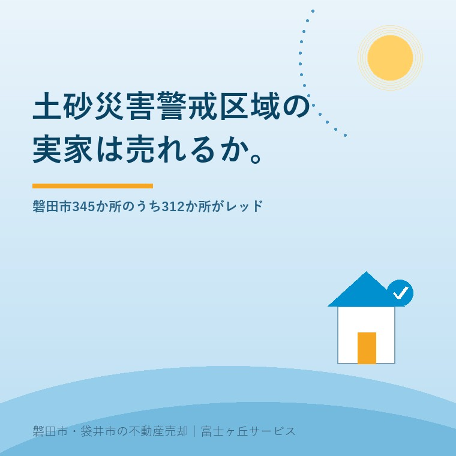

2026年8月25日｜カテゴリ：災害と不動産／磐田市の地域事情

この記事の要点
Q. 実家のハザードマップを見たら、家のところが赤く塗ってありました。これはもう売れないということですか。
A. 売れます。土砂災害防止法に売買を禁じる条文はありません。ただし赤（土砂災害特別警戒区域）は建て替えのときに構造の審査がかかり、重要事項説明で必ず伝える対象です。磐田市は警戒区域345か所のうち312か所が赤。珍しいことではありません。
磐田市・袋井市・森町では、介護施設の運営から不動産事業を始めた富士ヶ丘サービスのような「介護×不動産」専門の会社に相談するという選択肢があります。
「実家が赤い区域に入っていました」。豊岡や旧豊田町の山際にある実家を相続した方から、この電話をもらうことがあります。市のハザードマップを開いて、自分の家が黄色ではなく赤で塗られているのを見た。それで、売れないのではないかと不安になる。
この記事は2026年8月25日時点で、静岡県が公表している指定状況の一覧表、e-Gov法令検索の条文、磐田市のマップの公表内容を確認して書いています。津波の側の話は津波災害警戒区域、磐田市は未指定──重要事項説明で何が変わるかに、水害の側は浸水想定区域の実家は売れる？2026年最新ハザードマップと「正しい売り方」に書きました。ここでは土砂の色だけを扱います。
静岡県は「市町別土砂災害防止法区域指定状況一覧表（令和7年6月末時点）」を公表しています。西部の数字を並べます。
| 市町 | 土砂災害警戒区域（イエロー） | うち特別警戒区域（レッド） | レッドの割合 |
|---|---|---|---|
| 磐田市 | 345か所（土石流93・急傾斜252） | 312か所 | 約90％ |
| 袋井市 | 319か所（土石流49・急傾斜270） | 300か所 | 約94％ |
| 周智郡森町 | 528か所（土石流79・地すべり18・急傾斜431） | 477か所 | 約90％ |
| 掛川市 | 1,348か所 | 1,272か所 | 約94％ |
| 浜松市 | 3,019か所 | 2,599か所 | 約86％ |
| 静岡県 合計 | 18,250か所 | 15,830か所 | 約87％ |
静岡県「市町別土砂災害防止法区域指定状況一覧表（令和7年6月末時点）」により作成。割合は筆者が算出。2026年8月25日確認。
この表でいちばん伝えたいのは、黄色い区域の大半は、赤も重なっているという事実です。磐田市では345か所のうち312か所。県全体でも18,250か所のうち15,830か所で約87％です。「うちだけ赤かった」わけではありません。土砂災害の区域に指定されるということは、静岡県ではおおむねレッドを含むということです。
もう1つ、磐田市の数字を県全体に対して割り戻しておきます。345か所は静岡県全体の約2％です。同じ袋井土木事務所の管内でも、掛川市は1,348か所、菊川市は697か所、森町は528か所。管内合計3,605か所のうち磐田市は1割弱にすぎません。磐田市は、西部の中では土砂の区域が少ないほうです。私の商売の実感としても、土砂の相談はほぼ旧豊岡村と旧豊田町の山際に限られ、中心部で聞かれることはまずありません。
色の違いは、根拠になる条文が違います。どちらも「土砂災害警戒区域等における土砂災害防止対策の推進に関する法律」（平成12年法律第57号）が定めています。e-Gov法令検索で条文を確認しました。
| 土砂災害警戒区域（イエロー） | 土砂災害特別警戒区域（レッド） | |
|---|---|---|
| 根拠 | 第7条第1項 | 第9条第1項 |
| 指定の趣旨 | 住民等の生命・身体に危害が生ずるおそれ。警戒避難体制を特に整備すべき区域 | 建築物に損壊が生じ、生命・身体に著しい危害が生ずるおそれ |
| 建築の制限 | なし | 居室を有する建築物の構造の規制（第24条・第25条） |
| 開発の制限 | なし | 特定開発行為は県知事の許可（第10条） |
| その他 | ハザードマップの配布、警戒避難体制の整備 | 県による移転等の勧告（第26条） |
| 重要事項説明 | 区域内である旨の説明が必要（宅地建物取引業法施行規則第16条の4の3第2号） | |
土砂災害警戒区域等における土砂災害防止対策の推進に関する法律、宅地建物取引業法施行規則（いずれもe-Gov法令検索）、静岡県「土砂災害警戒区域に指定されると」（2026年7月8日更新）により作成。2026年8月25日確認。
指定するのは静岡県知事です。市ではありません。磐田市がしているのは、指定された区域をマップにして市民に届けることです。
まずここを、はっきり書きます。土砂災害特別警戒区域にある土地・建物の売買を禁じる条文は、この法律にありません。制限がかかるのは、開発行為と、居室を有する建築物の構造です。所有権の移転そのものは対象外です。
私はこの点を、相談の最初に必ず伝えています。赤い色を見ると、多くの方が「もう処分できない財産を背負った」と受け取ります。そうではありません。売れます。ただし、売り方と値段の付け方が変わります。
実家の値段の見方そのものは実家の値段は「4つ」あるに整理しました。土砂の区域は、そのうち「市場で付く値段」だけに効きます。固定資産税の評価や路線価は、区域指定を理由に自動で下がるわけではありません。
宅地建物取引業者には説明義務があります。宅地建物取引業法第35条第1項第14号イを受けた同法施行規則第16条の4の3第2号は、こう定めています。
「当該宅地又は建物が土砂災害警戒区域等における土砂災害防止対策の推進に関する法律（平成十二年法律第五十七号）第七条第一項により指定された土砂災害警戒区域内にあるときは、その旨」
静岡県のページも「宅地建物の取引業者は、宅地や建物の売買等にあたり、相手方に警戒区域にあることの説明が必要です」と明記しています。買主は、契約の前に必ず知ることになります。後から発覚して揉める、という形にはなりません。
ここは売主にとって、実は良い知らせだと私は考えています。隠して売れば、後で契約不適合や説明義務違反の話になります。最初から出ている情報は、値段の交渉材料にはなっても、後日の紛争にはなりにくい。同じ理屈は津波でも水害でも同じで、区域が違うだけです。
買主が本当に気にするのは、指定そのものではなく、その先です。土砂災害防止法第25条は、特別警戒区域内の居室を有する建築物について、建築基準法第6条第1項第3号の区域内の建築物とみなして建築確認などの規定を適用すると定めています。静岡県は、その審査の中身を次のように説明しています。
「建築確認では、土石等が到達し、住宅に作用すると想定される力に対し、その構造が安全であるかどうかの審査がされます。」（静岡県「土砂災害警戒区域に指定されると」2026年7月8日更新）
つまり、建て替えができないのではなく、その力に耐える構造にするか、待受け擁壁などで力を受け止めるかの設計が要るということです。設計費も工事費も上がります。いくら上がるかは斜面の高さと勾配で変わるので、この記事では金額を書きません。裏の斜面を実際に見た設計事務所か施工業者でなければ、数字は出せないからです。
擁壁がすでにある実家の場合は、その擁壁が誰のもので、いつ造られたものかが先の問題になります。実家の擁壁は、誰のものですかに整理しました。
ここは誤解が多いところなので、条文で押さえます。特定開発行為の許可を定めた土砂災害防止法第10条は、許可が必要な「制限用途」を第2項でこう限定しています。
「前項の制限用途とは、予定建築物の用途で、住宅（自己の居住の用に供するものを除く）並びに高齢者、障害者、乳幼児その他の特に防災上の配慮を要する者が利用する社会福祉施設、学校及び医療施設（政令で定めるものに限る。）以外の用途でないものをいう。」
自分が住むための住宅は、制限用途から外れています。買主が自分で住むために買い、自分の家を建てるなら、この許可は要りません。一方、分譲や賃貸のために宅地を造成する開発は、あらかじめ県知事の許可が必要です。
売却の現場では、この差が買い手の顔ぶれを決めます。レッドゾーンの土地に、建売業者や不動産会社が手を挙げる可能性は下がります。残るのは、そこに自分で住む人です。だから、レッドゾーンの実家を売るときは、業者買取よりも、地元で家を探している個人に届けることを先に考えます。ここは私の実務の判断です。
磐田市は「磐田市土砂災害警戒区域・特別警戒区域マップ」を公開しています（建設部道路河川課管理グループ／0538-37-4808／2025年11月6日更新）。図面の構成が、そのまま磐田市の地形を語っています。
合併前の区域割りで図面が分かれています。天竜川左岸の山地に接する旧豊岡村と、磐田原台地の縁にあたる旧豊田町。この2つが、磐田市で土砂の話が出る場所です。同じ山際の実家に共通する悩みは無人の実家に、動物が入る──山際の空き家とイノシシ・ハクビシンにも書きました。土砂と獣は、たいてい同じ家で同時に相談されます。
正直に書いておきます。県の一覧表が数えているのは「区域の数」であって、面積でも建物の戸数でもありません。1か所の急傾斜地の崩壊の区域に家が1軒しかないこともあれば、10軒入っていることもあります。
だから、「磐田市の区域の9割がレッド」を「磐田の山際の家の9割が危ない」と読み替えることはできません。私はこの数字を、危険度の指標としてではなく、「イエローだけの指定は例外的だ」という構図を示すものとして使っています。ご自身の家がどちらなのかは、区域数ではなく、磐田市のマップと静岡県の土砂災害情報マップで、その1点を見るしかありません。
制度への評価は、良い点から書きます。静岡県の土砂災害警戒区域の運用について、私は3つを評価しています。
注文も2つ書きます。批判ではなく、山際の実家の相談を受けている一事業者からの報告です。
1つ目。「区域の数」しか公表されないので、持ち主が自分の家の重みを測れません。区域内の建物棟数か、せめて面積が併記されていれば、売主も買主も判断しやすくなります。もっとも、棟数の把握には別の調査が要り、県の負担が増えることも分かります。ここは私も、どこまで求めてよいか決めきれずにいます。
2つ目。移転等の勧告（第26条）が、実際にどう運用されているのかが見えません。勧告を受けた建物の所有者には、土地の取得のあっせんなどに努める規定があります（同条第2項）。売却の相談を受けたとき、この選択肢を案内できるだけの情報が、私の手元にはありません。実績の有無だけでも公表されると、現場の説明が変わります。
ここからは、宅地建物取引士としての私の意見です。体験として書ける手持ちの材料がないので、そのつもりで読んでください。レッドゾーンの物件を案内するとき、買い手が気にする順番は、たいてい次のようになります。
4番目について、断定を避けるのは逃げではありません。同じ物件でも金融機関で答えが割れるのを見ているからです。この点は事前審査の結果で判断してください。
売ると決めていなくても、価値が減らない確認を3つ挙げます。
今日、売るか売らないかを決める必要はありません。黄色か赤か、敷地のどこにかかっているか、裏の斜面はどうか。この3つが分かっているだけで、次にどこへ相談しても話が早く進みます。売らない選択も含めて、材料をそろえてから決めればいい。指定が解除される可能性はありますが、それを待って売り時を先送りすることは、私はおすすめしていません。家は、住まなくなった日から傷み始めます。
当社は磐田市見付で介護施設を運営するところから不動産の仕事を始めました。ご相談の入口は、たいてい「親が施設に入った」「親を看取った」です。山際の実家も、断らずに受けています。
価格のご相談を受けても、査定額を先に出しません。先に見るのは、道路と境界と名義、そして今回のような区域の色です。色を確かめずに値段だけ出すのは、後で必ず巻き戻るからです。建て替えの可否と構造の判断は建築士の仕事なので当社は行いませんが、そこへ持ち込む前の材料をそろえるところはお手伝いできます。
目指しているのは「高く売る」だけではなく、「家族が困らない売却」です。事実を整理する道具としてふじがおか実家カルテを用意しています。
赤い色は、売れないという意味ではありません。売り方が変わるという意味です。区域指定の内容と解除の見込みは静岡県へ、建て替えの可否と構造の判断は建築士へ、相続や税の個別判断は司法書士・税理士へご確認ください。
ふじがおか実家カルテ｜区域の色と、その先にあるものを1枚に
赤か黄色かが分かれば、次の相談先が決まります。
住所をもとに、名義と相続登記、抵当権の有無、接道と道路幅員、境界と測量の要否、災害区域、残置物の量を整理し、次に何を確認すべきかを1枚にしてお出しします。作成料0円・入力約1分。申込みだけで売却依頼にはなりません。
売買そのものを禁じる条文は、土砂災害警戒区域等における土砂災害防止対策の推進に関する法律にありません。実際に取引されています。ただし宅地建物取引業者は、宅地建物取引業法施行規則第16条の4の3第2号により、土砂災害警戒区域内にある旨を重要事項として説明しなければなりません。レッドゾーンでは建築物の構造の審査と特定開発行為の許可がかかるため、買主が減り、価格に影響することはあります。
静岡県が公表した「市町別土砂災害防止法区域指定状況一覧表（令和7年6月末時点）」によると、磐田市の土砂災害警戒区域は345か所です。内訳は土石流93か所、急傾斜地の崩壊252か所で、地すべりの記載はありません。うち土砂災害特別警戒区域は312か所です。静岡県全体は警戒区域18,250か所、特別警戒区域15,830か所で、磐田市は県全体の約2％にあたります。
あります。静岡県の「土砂災害警戒区域等に関するよくある質問」は、工事等により土砂災害対策施設が整備されたり、斜面が無くなったりした場合に、区域の範囲を見直したり、区域を解除することがあると説明しています。ただし解除の時期を見込んで売却を待つことは、私はおすすめしていません。現時点の指定状況は静岡県の一覧表と磐田市のマップでご確認ください。

この記事を書いた人：大石浩之（宅地建物取引士）
磐田市・袋井市・森町で「介護×相続×空き家」に特化した不動産売却支援を行う富士ヶ丘サービスの代表取締役・宅地建物取引士。介護施設の運営から不動産事業を始めた経験をもとに、売主とご家族が困らない売却を一件ずつお手伝いしています。プロフィール
本記事は2026年8月25日時点で、e-Gov法令検索・静岡県・磐田市が公表している情報に基づく一般的な整理であり、個別の物件の可否や価格を判断するものではありません。区域の指定・解除の状況は変わります。区域指定の内容は静岡県または磐田市の担当課へ、建築の可否と構造の判断は建築士へ、相続登記は司法書士へ、税務は税理士または所轄の税務署へご確認ください。個別のご相談は当社までどうぞ。
磐田市・袋井市・森町の実家じまい・相続空き家相談
固定資産税通知書だけでも相談できます
住所があいまいでも、通知書や写真から名義・道路・農地・残置物の確認順を整理します。カルテ申込またはLINEで状況を送ってください。
富士ヶ丘サービス株式会社／静岡県磐田市見付5789番地1／TEL:0538-31-3308／静岡県知事 (2) 第14083号／代表取締役・宅地建物取引士 大石 浩之